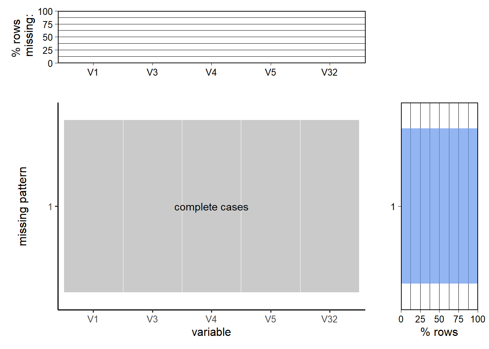

Chapter 3 Data
3.1 Sources
3.1.1 Flu Vaccine Coverage Dataset
Longyuan Gao is responsible for collecting the data. The influenza vaccine coverage data is collected from CDC, which is stated in the previous chapter. The dataset is comprehensive in the sense that it records the coverage rate for every state and region in the United States. Although there is some missing data (like the June coverage data), the overall quality is adequate enough for us to conduct visualizations. The data is collected from the National Immunization Survey-Flu (NIS-Flu), a national wide survey on vaccination coverage conducted by phone, and the Behavioral Risk Factor Surveillance System, which is another telephone survey. To obtain a CSV file, I just downloaded it from the webpage.
Here is some basic information about this dataset:
Variables: vaccine type, geography(state/county/region, corresponding name, and a FIPS number), season(year), month, dimension(type(age/ethnicity), metric(>6 year, e.g.)), estimated coverage, sample size, and CI.
Number of records: about 185K.
Problems: There are certain time periods where data is completely missing (like June 2021), and all the cells are in chr form, not numeric form. So that will bring some difficulties in the data transformation step.
3.1.2 Demographic Datasets
For demographics data, I used all three nationwide census datasets (population, education attainment, and income) listed in the previous chapter. The census are all from 2021 since The latest data in the flu shot dataset is in 2021 (so that we can compare flu vaccine coverage rate with other demographics information in the same time scale). It is collected by the yearly American Community Survey conducted by Census Bureau. The data is available for download right on the webpage.
Here is some basic information about these datasets:
Variables and number of records:
Education attainment: age groups by education attainment (for example, high school degree for people >25), race groups by education, poverty rate, median earnings, etc. This dataset is not tidy, so we are to decide which metrics are variables, about 1 observation for each state.
Population: similar situation to education, this dataset is not tidy. Variables are age groups (<5, 5-9, etc.), selected age categories, statistical summaries, etc., and about 1 observation for each state.
Income: total population in that state, income ranges, median, mean, etc., about 1 observation for each state.
Problems:
All of these three datasets are in chr form, so we have to spend time transforming these characters to numeric. Also, these datasets are in a nested column form, meaning that there are columns within a column if we view them in Excel. So, we have to find a way to deal with this kind of format. Moreover, there are so many variables that we do not need, so we also need to deal with the superfluous columns.
3.1.3 COVID-19 Case Dataset
For COVID-19 case data, I again downloaded it from the CDC, as documented above. The dataset starts in 2020 and ends in 2022, which overlaps the flu shots data in the years 2020 and 2021, giving us the opportunity to visualize some trends in COVID cases and flu shots in the same time scale. The data is collected by local reports. The dataset is available for downloading online.
Variables: submission date, state, total number of cases, Total probable cases, total confirmed cases, number of new cases, number of new probable cases, total number of deaths, total number of confirmed deaths
Number of Records: about 60.1k.
Problems: There are many variables we don’t need in this project. So, we have to select related columns before we do the analysis. And many rows have 0 and NAs. We should take this into consideration during analysis.
3.2 Data Cleaning and Transformation
3.2.1 Flu Vaccine Coverage Dataset
First, we extract the year of the record from the season column, since the number after year in that column is not the month; then we combine the year with month in Month column, convert it to Date class and store it in a new column called “ym”. Also, we convert column Estimate, which is the estimated coverage rate, from chr to numeric.
3.2.2 Demographic Datasets
For these datasets, we transform them more or less in the same way: first, only keep columns (which contain data for each state) with estimated value for each state, and transpose the dataset so that each row contains the metrics for only one state. Then, change the row names to the exact name of that state, and convert the entries to numeric. For education, we add a column called “high_school_higher_pop” that represents the total population that counts the number of people that attained at least a high school or equivalent diploma. For population, we add 3 columns, “children_pop”, which counts the number of people <=14, “children_ratio”, ratio of children with respect to the total population, “elder_ratio”, ratio of people >= 65 with respect to total population. For income, we only keep the income data for households, which is the majority, and we calculate the ratio of households who earn less than 14999 USD/year (stored in household_poverty_rate) or more than 150,000 USD/year (stored in household_wealth_rate) .
3.2.3 demo_df, an Enhanced Dataframe
After doing above transformations, we combine the added and some inherent columns for the demographics dataset with the flu shot coverage data and form a more concise dataframe called demo_df, and we do further feature engineering in this df. To be more specific, this new df includes the by-state information on
- number of people who attained at least a high school or equivalent degree;
- population over 18;
- ratio of population over 18 that received at least a high school or equivalent degree (engineered by dividing 1 by 2);
- total population;
- population under 14;
- ratio of children (<=14);
- population over 65;
- ratio of people >=65;
- median household income;
- mean household income;
- household poverty rate;
- household wealth rate.
The reason for doing this is that the original datasets are too cubersome for us to work with.
3.2.4 us_by_year, an Enhanced Dataframe
This df is extracted from the flu shot dataset. In this dataframe, we only keep the records for national wide flu coverage for each month, from 2009 to 2021, and only records that is related to seasonal influenza, since H1N1 vaccines are only provided in earlier years. Also, we only care about the age metric, which should be “>6” months, which will include all eligible people. Again, the reason we extract this specific dataframe is to eliminate unnecessary entries for easier plotting, while keeping the original dataframe the same in case we need to gather other data from it.
3.3 Missing value analysis
Here we use naniar package to visualize.
3.3.1 Flu Vaccination Data

From the plot, we can see that some rows are missing sample size variables, but since that variable is not taken into consideration, we are not concerned with that variable being NA; Also, some rows are missing Estimate, which is our focus. For rows with missing Estimates, we decided not to impute them, since we cannot be sure what variables it is dependent on. Some rows are also missing estimates and sample sizes together (maybe because that record is completely missing).
Other than the missing columns shown in the graph, we are also observing that some rows are missing, such as all the June data mentioned before, which is completely missing without a note. This may be caused by the reset of vaccine contents in June of each year. Also, some earlier data contains vaccine coverage data for Asians and Native Americans, but that kind of information is missing in more current data. So we are very careful when dealing with the dataset: we regularly check if there is missing data in generated dataframe or abnormalities in the plot.
3.3.2 Demographic datasets
3.3.2.1 Population dataset
Since visualizations for the whole dataset is unhelpful and somewhat meaningless (since there are just so many columns, and some columns are intended to be na), we only visualize the missing values on the subsets of the datasets which are used in our data analysis.  There are no missing values in our used subsets of population dataset.


3.3.3 COVID-19 cases dataset

We can observe that the most missing pattern is (conf_cases(confirmed cases), prob_cases (total probable cases), conf_death (confirmed deaths), prob_death), this can be caused by missing all reports for a certain day. The second most frequent missing pattern is (conf_death and prob_death), which both focus on the death count; the third most missing pattern is (conf_cases and prob_cases), which is a similar situation as the second pattern; there are also about 3400 rows that missing all confirmed and probable case and death counts. Other than these observable patterns, there are a few rows that have their own specific missing patterns, which may be caused by record glitches.